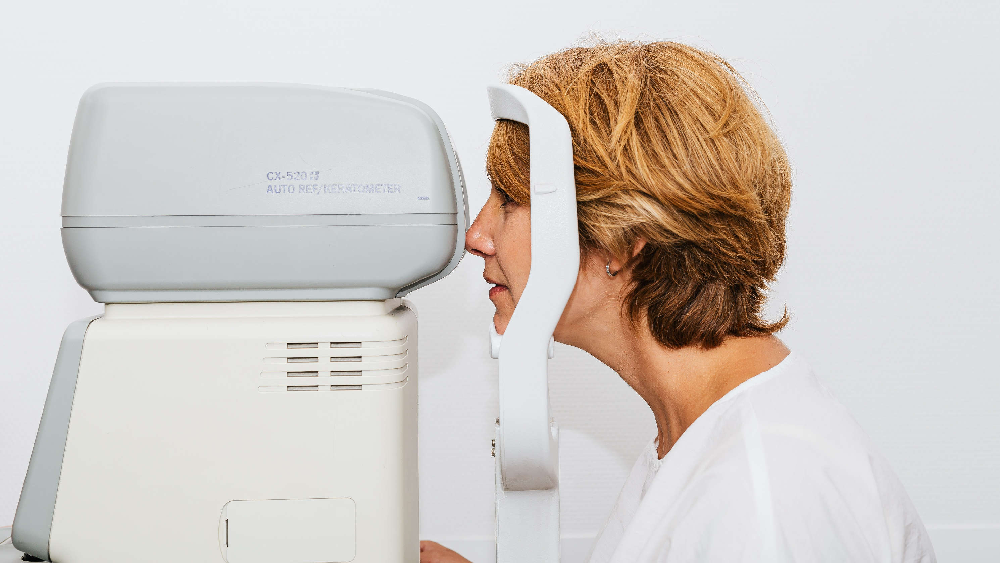

Welcome to ABC Optical,
Brisbane's favourite optical store.
Read more...
About Us
We are a well-regarded Brisbane-based optical store, recognised as being able to manage children's needs with a professional and caring approach. We employ two full-time, in-store, qualified optometrists able to diagnose and treat a number of eye-related problems.
Our optometrists strive to make a positive difference to the health and well-being of our customers, endeavouring to obtain the best visual outcome so that customers can realise their full potential in work, study, sport, and leisure.
Our Services
- Eye Examinations (may be bulk-billed)
- Diabetic eye examinations
- Colour Vision assessments
- Macular Degeneration tests
- Glaucoma & eye pressure testing
- Checks for Cataracts
- Clearness of vision (myopia, hyperopia, astigmatism)
- Focusing ability (Presbyopia)
- Eye muscle movement and control
- Amblyopia (lazy eye)
- Referrals for eye laser surgery
- Contact lens fitting and management
- Mining & Industrial Safety Spectacles
- Spectacles (may be bulk-billed to private Health Fund optical cover)
- Advice on the correct fitting of good quality sunglasses (both prescription and non-prescription, in both adults and children, particularly in a sporting environment)
Contact Us
We are located at The Myer Centre in the Queen Street Mall.
Find us on Level 1, Shop number 36.
 info@abcoptical.com
info@abcoptical.com
 Phone: 07 3256 7101
Phone: 07 3256 7101
Our trading hours are:
Mon – Thurs: 9am - 5.30pm
Fri: 9am - 9pm
Sat: 9am - 5pm
Sun: 10am - 5pm